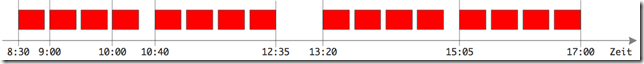
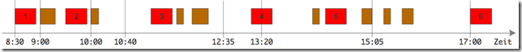
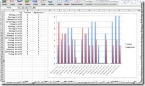

Tipps für mehr Produktivität und Zufriedenheit – Teil 4
Tipps für mehr Produktivität und Zufriedenheit – Teil 4
Entstören Sie Ihre Arbeit, indem Sie mit Unterbrechungen bewusster umgehen. Die lassen sich nicht vermeiden, also nehmen Sie sie vorweg. Unterbrechen Sie sich selbst periodisch. Das dient Ihrem Fokus und hält Sie zugänglich für andere. So lautete mein vorheriger Tipp.
Zufrieden arbeiten können Sie nur, wenn Sie nicht Spielball äußerer Umstände sind. Reagieren Sie nicht, sondern agieren sie. Sie brauchen ungestörte Zeit der Aufmerksamkeit für jeweils eine Aufgabe. Währenddessen sagen Sie Nein zu Störenfrieden. Noch besser: Versuchen Sie, erst gar nicht gestört zu werden, indem Sie das Telefon umleiten, ein “Bitte nicht stören” Schild an die Tür hängen oder sich anderweitig unzugänglich machen. Sprechen Sie das mit Ihren Kollegen und Vorgesetzten ab. Schön wäre es natürlich, wenn die auch mitmachten. Vielleicht finden Sie sogar gemeinsame störungsfreie Zeiten? Ihre Arbeit und Ihre Zufriedenheit werden es Ihnen danken.
Fokus in solcher Weise über längere Zeit aufrecht zu erhalten, ist allerdings schwer, sehr schwer. Je länger Sie sich zurückziehen, desto schwerer wird es, Störer zu vertrösten. Darüber hinaus strapazieren lange störungsfreie Zeiten aber auch Ihre Aufmerksamkeit. Selbst wenn Sie wollten, könnten Sie sich nicht acht oder vier oder auch nur zwei Stunden verlustfrei konzentrieren. Wir alle brauchen Pausen in der Arbeit, um unsere “Aufmerksamkeitskraft” zu regenerieren.
Deshalb lautet mein heutiger Tipp:
Tipp #4: Arbeiten Sie im Takt der Tomaten
Was soll das denn sein, der “Takt der Tomaten”? Es ist eine Anspielung auf die so genannte Pomodoro Technique, auf Deutsch: die Tomaten-Methode [1, 2, 3]. Der Italiener Francesco Cirilli hat sie vor einigen Jahren erfunden, um sich selbst aus dem Hamsterrad unbefriedigender Arbeit unter Zeitdruck und ohne Fokus zu befreien. Ihren Namen hat sie dabei bekommen, weil Francescos Mittel zur Befreiung eine Eieruhr in Form einer Tomate war.
Im Kern ist die Methode trivial:
- Sie konzentrieren sich auf eine Aufgabe für 25 Minuten.
- Dann machen Sie eine Pause von 5 Minuten.
- Weiter bei Schritt 1.
Im Grunde war es das. Der Rest sind Feinheiten, aber nicht unwichtig, zum Beispiel:
- Nach jeder 4. Konzentrationsphase legen Sie eine Pause von 15 Minuten ein.
- Wenn Sie in einer Konzentrationsphase wirklich unterbrochen werden, dann beenden Sie diese vorzeitig. Nach der Unterbrechung beginnen Sie eine neue Konzentrationsphase.
- Unterbrechungen könnten sein, dass Sie zum Chef gerufen werden oder einem Kunden am Telefon 5 Minuten etwas erklären müssen oder etwas Dringendes vergessen haben, das unaufschiebbar sofort erledigt werden muss.
- Wenn Sie in einer Konzentrationsphase abgelenkt werden, dann machen Sie einen Strich auf einer Liste.Ablenkungen könnten ein kurzer Blick auf eine eingehende Chat-Nachricht sein oder die kurze Auskunft an einen Kollegen, der den Kopf durch die Tür steckt, um nach dem Verbleib eines Ordners zu fragen.
Mit der Tomaten-Methode wird Ihr Arbeitstag zu einer Kette von “Aufmerksamkeitsperlen” – liebevoll “Tomaten” genannt – in der Größe von 25 Minuten:

So ordentlich strukturiert könnten Sie also arbeiten.
Zweck der Tomaten-Methode ist, dass Sie Fokus herstellen. Sie sollen sich auf das, was Sie tun, konzentrieren. Wirklich konzentrieren. Als realistische Zeitspanne haben sich dafür 25 Minuten herausgestellt [a]. In 25 Minuten lässt sich konzentriert etwas schaffen. Wenn man Sie lässt, schaffen Sie es auch, sich 24 Minuten lang zu konzentrieren. Andererseits lassen sich allerlei Unterbrechungen 25 Minuten (bzw. im Mittel ja nur 12,5 Minuten) hinauszögern. Das reicht vom Toilettenbesuch bis zum Gespräch mit Kollege oder Kunde.
Am besten erklären Sie Ihrem Umfeld, dass Sie zukünftig Ihre Produktivität und Zufriedenheit mit der Tomaten-Methode steigern wollen. Laden Sie auch andere dazu ein. Es macht Spaß, sich gegenseitig daran zu erinnern, “an Tomaten zu arbeiten” oder “mal wieder Tomatensalat” zu machen. Dann fällt es Ihnen auch leichter zu sagen, “Ich bin gleich bei dir. Aber lass mich noch kurz meine Tomate zu Ende bringen.” Nur so kommen Sie ja aus der grassierenden Unterbrechungskultur heraus.
Kontrollieren Sie Ihre Zeit. Lassen Sie sich nicht von anderen kontrollieren. Agieren Sie, statt immer nur zu reagieren. Ihre Verlässlichkeit wird steigen. Die Qualität Ihrer Arbeit wird steigen.
Allerdings: Oben habe ich “könnten” geschrieben, weil der Arbeitsalltag Sie natürlich nicht einfach in Ruhe Ihre Tomaten machen lässt. Auch in einem sehr verständigen Umfeld werden Sie das Ideal von 14 oder 16 Tomaten pro Tag (je nach Arbeitstaglänge) kaum erreichen. Realistisch sind zunächst vielleicht nur 4 Tomaten, mittelfristig dann 8 oder 10. Wichtig ist, dass Sie die Entwicklung der geschafften Tomaten beobachten.
So weh es Ihnen auch tun mag, seien Sie dabei konsequent und zählen Sie unterbrochene Tomaten nicht! Sie würden damit der Unterbrechungskultur Vorschub leisten. Ein realistischer Tag sieht dann zunächst vielleicht so aus:

- Sie schaffen nur 5 Tomaten von 16
- Immer wieder beginnen Sie Tomaten, müssen die jedoch wegen Unterbrechungen abbrechen.
- Immer wieder beginnen Sie gar nicht erst eine Tomate, weil Sie Angst haben, sie nicht durchziehen zu können oder nicht wissen, wie lange eine Arbeit dauert, oder es sich um Tätigkeiten handelt, die “zwischen Tür und Angel” stattfinden.
- Morgens früh und abends nach dem üblichen Arbeitsende schaffen Sie am ehesten Ihre Tomaten.
Das sieht frustrierend aus, oder? Aber verzagen Sie nicht! Gerade am Anfang ist ein solcher Tomatensalat normal. Wenn Sie Ihre Tage in ähnlicher Weise protokollieren, bekommen Sie erstmalig einen fassbaren Eindruck davon, warum Sie bisher so unproduktiv und unzufrieden waren. Eine Erkenntnis gewinnen Sie dadurch unmittelbar: Dass Sie bei so wenig konzentrierter Zeit, bei so zerstreuter Aufmerksamkeit nur wenig schaffen, ist doch kein Wunder. Unzufriedenheit entsteht, weil Sie Aufmerksamkeitsphasen nicht verlässlich herstellen können. Sie wissen einfach nicht, wann Sie wie viel wegschaffen können.
Führen Sie also ein Tomatentagebuch. Tragen Sie pro Tag mindestens die Zahl der geschafften Tomaten ein. Ein Blatt Papier mit einem Zeitstrahl für ein paar Wochen reicht, auf dem Sie die geschafften Tomaten pro Tag als kleine Säulen eintragen. Oder benutzen Sie Excel, wenn Ihnen das näher liegt [b]:

Wichtig ist, dass Ihnen Ihr Messwerkzeug nicht im Wege steht. Sie sollen möglichst einfach einen Überblick über Ihre Tomatenentwicklung bekommen. Geben Sie sich Ihr eigenes Produktivitätsfeedback, wenn Ihnen sonst niemand hilft. Es ist doch so simpel: Wirklich produktiv, d.h. Ihr Geld wert, sind Sie nur, wenn Sie sich auf Ihre Aufgaben konzentrieren. Wie sehr Sie das de facto tun, zeigt Ihnen die Tomatenstatistik. Solange Sie dort unter 8-10 Tomaten pro Tag sind und der Trend nicht nach oben deutet, bleiben Sie hinter dem zurück, was Sie könnten und sollten.
Fazit
Wenn Sie produktiver werden wollen, müssen Sie immer wieder Abstand einnehmen zu dem, was Sie tun. Nur so kommen Sie zu einer Beobachtung Ihrer Arbeit und können deren Kurs korrigieren. Der Takt der Tomaten-Methode ist dafür ein ganz einfaches Mittel. Sie müssen niemanden fragen, ob Sie es einsetzen dürfen. Fangen Sie also gleich an. Ein Timer findet sich in jedem Handy; es muss ja nicht gleich eine Tomatenuhr sein 😉
Und dann versuchen Sie, 25 Minuten bei einer Sache zu bleiben. Das wird am Anfang nicht ganz leicht sein. Doch das kommt mit der Zeit.
Nehmen Sie sich nicht zu viel vor. Zunächst könnten Sie die Tomaten-Methoden zum Beispiel auf die unliebsame Buchhaltung beschränken; oder Sie helfen sich, auf die Vorbereitung einer Präsentation zu konzentrieren. Jeden Tag ein paar Tomaten auch nur auf eine Aufgabe angewandt, werden Sie voran bringen.
Fußnoten
[1] Wikipedia, Pomodoro Zeitmanagement [2] Staffan Nöteberg, Die Pomodoro-Technik in der Praxis: Der einfache Weg, mehr in kürzerer Zeit zu erledigen [3] Francesco Cirilli, The Pomodoro Technique – Das Buch vom Erfinder [a] Weder die 25 Minuten “Tomatenlänge”, noch die Pausendauer oder irgendetwas sollten Sie als Dogma betrachten. Experimentieren Sie. Vielleicht liegen Ihnen eher 45 Minuten pro Tomate und 10 Minuten Pause? Finden Sie es heraus. Die Tomaten-Methode hat nur ein Ziel: Sie in konzentriertes Arbeiten zu bringen. [b] Es gibt natürlich inzwischen spezielle Programme, die Sie beim “Tomaten machen” unterstützen. Dort sind Timer für Tomaten und Pausen eingebaut, Sie können die Tomaten Aufgaben zuordnen und eine visuelle Auswertung gibt es auch. Ich arbeite mit Promodoro Pro auf dem iPhone und mit My Little Pomodoro unter Mac OS X. Beide sind für kleines Geld zu haben. Kostenlose Alternativen gibt es aber auch. Hier eine Übersicht verschiedener Angebote.
Der Gastblogger
Ralf Westphal ist Berater und Coach für Softwarequalität/-architektur und Teamorganisation. Er arbeitet seit mehr als 25 Jahren selbstständig für die IT-Branche – und in den letzten Jahren auch darüber hinaus. Als Querdenker mit breitem Interessengebiet glaubt er daran, dass Lernen im persönlichen wie organisatorischen Maßstab von Grenzüberschreitungen profitiert. Ralf ist darüber hinaus Autor von mehr als 500 Publikationen in Fachzeitschriften, betreibt mehrere Blogs und ist regelmäßiger Referent auf Fachkonferenzen im In- und Ausland. Blog: ralfw.blogspot.com, Twitter:@ralfw, Homepage: www.ralfw.de.
Weitere Artikel

Puffer sichern Flow
Es wird allerhöchste Zeit, sich von der Idee, dass nur wer am Limit arbeitet, effizient sei, zu verabschieden. Unter Volllast, ganz ohne Puffer zu arbeiten ist eine „gute“ Voraussetzung für Unzuverlässigkeit, Fehler …

Kollaboration im Office mit Kanbanize
Ein Tool, was mich für die digitale Kollaboration im Office begeistert ist Kanbanize. Dort kann man wirklich sehr fortgeschritten und smart zusammenarbeiten. Mit seinen verschiedenen Perspektiven auf den Flow im Office, der …